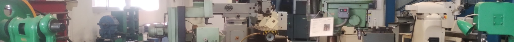

Productos de investigación y desarrollo tecnológico
El Grupo de Investigación Sistemas Mecánicos de Frontera tiene su origen en el año 1997. En la Tabla 3 se presenta un concentrado del
número de los principales resultados de investigación, producto de un trabajo colectivo y colaborativo dentro de la Universidad por parte del
núcleo básico de profesores y colaboradores. En ésta se resume los resultados del trabajo de investigación en el periodo del año 2015 a la fecha.
Se considera el desarrollo tecnológico como un resultado del trabajo de investigación relacionado con los objetivos del Departamento de Energía.
Se incluye también los reportes técnicos de los proyectos de integración asociados con el trabajo de investigación de los profesores, los cuales
se describen en el Anexo A.
Tabla 3. Resumen de los productos del trabajo de investigación del Grupo de Investigación Sistemas Mecánicos de Frontera del 2015 a la fecha.
| No. |
Resultados de Investigación |
Producto de un trabajo colectivo y colaborativo dentro de la Universidad con 2 o más profesores |
Producto del trabajo dentro de la Universidad con un profesor |
Total |
| 1 |
Artículos de investigación publicados en revistas nacionales e internacionales. |
27 |
46 |
73 |
| 2 |
Artículos presentados en congresos nacionales e internacionales. |
17 |
20 |
37 |
| 3 |
Desarrollos tecnológicos (prototipos). |
13 |
- |
13 |
| 4 |
Reportes técnicos de proyectos de integración asociados con el trabajo de investigación. |
31 |
11 |
42 |
| |
TOTAL |
|
|
165 |
Desarrollos tecnológicos
- Gilberto Domingo Álvarez Miranda, Pedro Rosas Quiterio, Zeferino Damián Noriega, Romy Pérez Moreno, Francisco Beltrán Carbajal. Prototipo innovador Prensa hidráulica tipo H de 10 toneladas, 2021.
- Gilberto Domingo Álvarez Miranda, Pedro Rosas Quiterio, Luis Javier Mendoza Hernández. Prototipo innovador Sistema termométrico para evaluar la eficiencia del proceso de torneado, 2020.
- Diseño y construcción de un vehículo todo terreno baja SAE 2019. Este vehículo quedó en el lugar No. 17 de 33 vehículos de 33 instituciones participantes en la competencia nacional.
- Diseño y construcción de un vehículo todo terreno baja SAE 2018. Este vehículo quedó en el lugar No. 20 de 34 vehículos de 33 instituciones participantes en la competencia nacional.
- J. Pedro A. Puerta Huerta, Zeferino Damián Noriega, Gilberto D. Álvarez Miranda, Romy Pérez Moreno, Ernesto Montes Estrada y Francisco Beltrán Carbajal. Prototipo de Sistema de Asistencia Nocturna para Personas con Estancia Prolongada en Cama, 2018.
- Diseño y construcción de un vehículo todo terreno baja SAE 2017. Este vehículo quedó en el lugar No. 23 de 28 vehículos de 24 instituciones participantes en la competencia nacional.
- Romy Pérez Moreno, Zeferino Damián Noriega, Ernesto Montes Estrada, Gilberto Domingo Álvarez Miranda y Francisco Beltrán Carbajal. Robot antropomórfico de 5 GDL, 2017.
- Ernesto Montes Estrada, Zeferino Damián Noriega, Romy Pérez Moreno, Gilberto D. Álvarez Miranda. Prensa auto-centrante lineal, 2017.
- Zeferino Damián Noriega, Ernesto Montes Estrada, Francisco Beltrán Carbajal, Gilberto D. Alvarez Miranda, Romy Pérez Moreno. Herramental para troquelado manual de plantilla de lámina de aluminio, 2017.
- Gilberto D. Álvarez Miranda, Zeferino Damián Noriega, Ernesto Montes Estrada, Francisco Beltrán Carbajal, Homero Jiménez Rabiela, Benjamín Vázquez González, Romy Pérez Moreno. Probetas prototipo para la práctica didáctica. Rugosidad. Laboratorio de Metrología, 2017.
- Ernesto Montes Estrada, Zeferino Damián Noriega, Gilberto D. Álvarez Miranda, Romy Pérez Moreno. Montajes didácticos para torneado y barrenado, 2016.
- Gilberto D. Álvarez Miranda, Rosas Rivera J. P. Francisco, Recova Cruz H. Damián, Galindo Quevedo Lauro, Zeferino Damián Noriega, Francisco Beltrán Carbajal, Homero Jiménez Rabiela, Ernesto Montes Estrada y Pérez Navarrete Jonathan. Prototipo didáctico de máquina de ensayos para determinar fatiga con viga rotatoria, 2015.
- Zeferino Damián Noriega, Francisco Beltrán Carbajal, Ernesto Montes Estrada, Gilberto D. Álvarez Miranda, Romy Pérez Moreno. Prototipo de bastón de dimensiones personalizadas, 2015.
